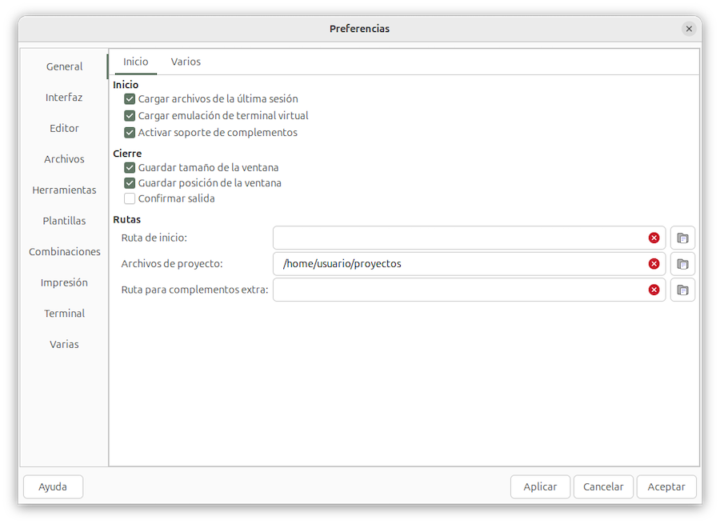
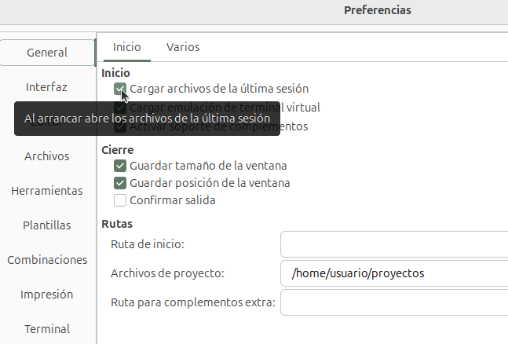
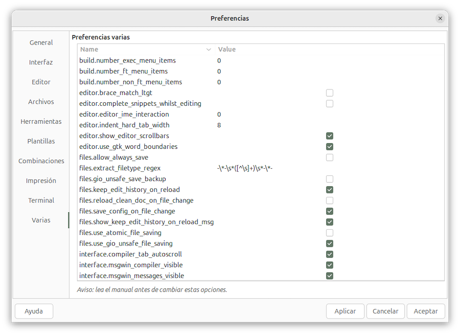
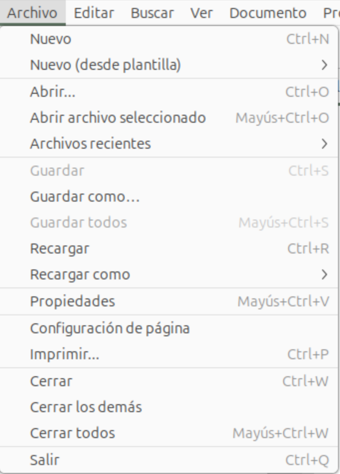
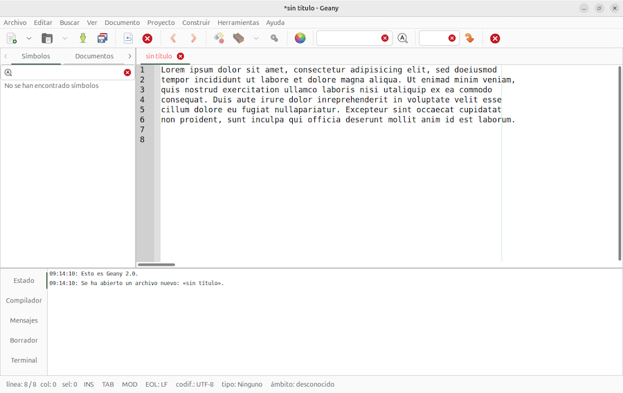
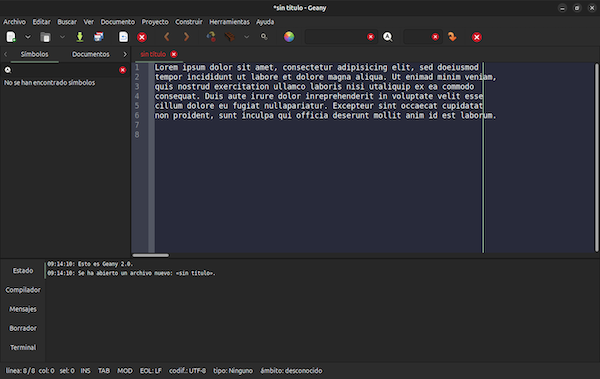
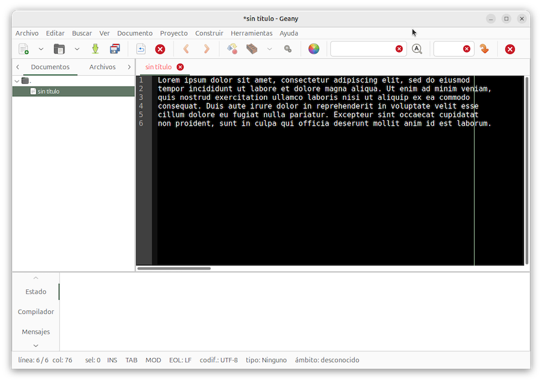

Personalizar Geany¶
Geany cuenta con opciones de configuración que permiten adaptar su funcionamiento a nuestros deseos. Se accede mediante el menú Editar > Preferencias. Los ajustes que hagamos persistirán si cerramos Geany y volvemos a abrirlo.
Adicionalmente, hay ciertos ajustes que se hacen pulsando en el menú Ver, que también persisten entre sesiones de Geany. Por ejemplo, mostrar u ocultar el panel inferior de mensajes, u otros elementos.
Existe una tercera forma de configuración, pulsando en el menú Documento. Solo tiene efecto mientras tengamos abierto el fichero actual, y las opciones se revertirán a los valores predeterminados al reiniciar Geany.
De esta forma, algunas opciones de configuración pueden estar presentes a nivel general o de documento, Por ejemplo, si tenemos una línea de texto más larga que el espacio de visualización, podemos activar el Ajuste de línea para que se muestre completa, partida en varias líneas. Si lo hacemos desde el menú Documento > Ajuste de línea, solo tendrá efecto en la sesión actual. Si lo marcamos mediante Editar > Preferencias > Editor, la configuración se aplicará en futuras sesiones.
Una cuarta opción de personalización consiste en establecer una configuración específica para determinado proyecto. Un proyecto es un conjunto de documentos, y se puede configurar por separado mediante el menú Proyecto > Propiedades. Lo veremos más adelante, en el capítulo dedicado a proyectos.
Finalmente, tenemos la posibilidad de editar manualmente algunos de los archivos donde Geany guarda las configuraciones. Esos archivos están accesibles pulsando en el menú Herramientas > Archivos de configuración. Su edición nos obligará a consultar las especificaciones técnicas en el manual de geany. Veremos que muchas de las líneas de estos archivos van precedidas por un caracter #, lo que desactiva el efecto de esa línea, aplicándose la configuración por defecto. Para personalizarla, suprimir estos caracteres # y ajustar la línea de texto a nuestro gusto.
Editar preferencias¶
Al pulsar sobre el menú Editar > Preferencias se muestra una ventana de diálogo que proporciona varias categorías de elementos a configurar. Esas categorías se muestran en la barra lateral:

Una vez seleccionada una categoría, en la parte superior hay unas pestañas para acceder a subcategorías. En la imagen vemos que la categoría General tiene dos pestañas, Inicio y Varios.
Veamos un ejemplo. Supongamos que queremos evitar que cada vez que se inicia Geany, se abran automáticamente los ficheros que había abiertos al cerrar la última sesión. Para ello vamos al menú:
Editar > Preferencias > General > Inicio > Cargar archivos de la última sesión
... y desmarcamos la casilla.
Podemos hacer todos los cambios que queramos, que quedarán establecidos para la sesión actual y las próximas.
En esta ventana de edición de preferencias tenemos tres botones en la esquina inferior derecha:
- Cancelar: descarta los cambios y cierra la ventana.
- Aceptar: guarda los cambios y cierra la ventana.
- Aplicar: guarda los cambios, pero no cierra la ventana, permitiendo cambiar otras configuraciones.
Muchas opciones de ajuste muestran una burbuja emergente descriptiva si pasamos el ratón sobre el elemento en cuestión, sin llegar a pulsar:

Complementos¶
Geany puede extender sus capacidades mediante la instalación de complementos, como vimos en el capítulo anterior. Pero inicialmente, no estarán operativos mientras no los activemos. Se hace pulsando en el menú Herramientas > Administrador de complementos y marcando aquellos que deseemos activar.
Una vez activados, algunos de los complementos incluyen opciones que deben activarse usando el menú Editar > Preferencias de complementos. Para ver las posibilidades de configuración de cada complemento, consultar su documentación en https://plugins.geany.org.
Por ejemplo, supongamos que en la barra lateral añadimos la pestaña del Navegador de Archivos. Pero al pulsar sobre esta nueva pestaña, no se muestran los archivos ocultos del sistema. En Linux y Mac, por ejemplo, son aquellos cuyo nombre comienza por un punto. Para activar su visualización, pulsar en el menú Editar > Preferencias de complementos, seleccionar el navegador de archivos, y marcar la casilla Mostrar archivos ocultos.
Los complementos se cargan al iniciar Geany, siempre que la preferencia General > Activar soporte de complementos está activada.
Los complementos se instalan en una carpeta por defecto, dependiendo del sistema operativo. Podemos averiguar esa ubicación de la siguiente forma:
- pulsar en el menú Herramientas > Administrador de complementos
- en la lista de complementos instalados, pasar el cursor del ratón sobre un complemento
- pasada una fracción de segundo, se muestra un mensaje emergente con información del complemento, incluyendo la ruta del archivo.
Si tenemos complementos ubicados en una carpeta diferente de la estándar, se puede configurar Geany para que acuda a ella al cargar los complementos al inicio de la sesión. Se establece esta carpeta extra con el menú Editar > Preferencias > General > Rutas > Complementos extra.
Configurar la visualización de elementos¶
Pulsando en Editar > Preferencias > Interfaz, podemos personalizar el contenido de la ventana de Geany. Algunas opciones:
- Mostrar barra lateral. Establece si se debe mostrar la barra lateral.
- Mostrar lista de símbolos. Muestra u oculta esa pestaña de la barra lateral.
- Mostrar lista de documentos. Muestra u oculta esa pestaña de la barra lateral.
- Posición de la barra lateral. A la izquierda o a la derecha de la ventana del editor.
- Posición de la ventana de mensajes. En la parte inferior o a la derecha de la ventana del editor.
- Mostrar u ocultar barra de estado.
Las opciones de mostrar/ocultar elementos también pueden activarse desde el menú Ver.
Fuentes¶
Para establecer la fuente de letra en el editor y resto de paneles, pulsar sobre Editar > Preferencias > Interfaz > Fuentes
Pestañas de documentos¶
En el panel de edición, cada documento abierto se selecciona pulsando en su pestaña. Podemos configurar el comportamiento de las pestañas pulsando en Editar > Preferencias > Interfaz > Pestañas:
-
Mostrar/ocultar pestañas en el editor
-
Mostrar botones de cierre
[x]en las pestañas del editor. -
Posición de nuevas pestañas. Cuando abrimos un archivo, la pestaña se puede situar a la izquierda o a la derecha de todas las existentes, o bien al lado de la actual, en lugar de ubicarla en el extremo.
-
Activar el doble clic para ocultar todos los componentes adicionales. Esto equivale a ejecutar el menú Ver > Activar todos los componentes adicionales, pero si activamos esta opción, basta con hacer doble clic en una pestaña para lograr el mismo efecto.
Los componentes en cuestión son la barra de iconos, la barra de estado, las pestañas de documentos, y el panel de mensajes. Para volver a visualizarlos, habrá que usar el menú Ver.
-
Longitud de la etiqueta de la pestaña. Si los nombres de archivos son largos, podemos establecer un límite para la cantidad de caracteres a visualizar en cada pestaña.
-
Posición de las pestañas. Por defecto, se ubican en la parte superior del panel, salvo la ventana de mensajes, que muestra las pestalas a la izquierda. Podemos cambiarlas de sitio, y ponerlas a la derecha, izquierda, arriba o abajo de cada panel.
Mostrar números de línea¶
Cuando editamos un documento, podemos averiguar la posición del cursor mirando en la barra inferior de estado, donde se indica el número de línea y columna.
Como alternativa, podemos mostrar una barra lateral en el panel de edición, con los números de línea. Se activa con el menú Editar > Preferencias > Mostrar > Mostrar números de línea.
Si activamos el ajuste de línea (Preferencias > Editor > Características> Ajuste de línea), el número de línea se refiere a la línea física, no a la mostrada.
Configuraciones varias¶
En el apartado "Varios" de la ventana de configuración de Geany, encontraremos una lista de palabras clave en lugar de un texto "civilizado" de lo que significa cada opción:

Son configuraciones poco utilizadas, que raramente cambiaremos. Por ejemplo, el panel de edición tiene en los bordes dos barras de desplazamiento horizontal y vertical, que permiten desplazar el documento con el ratón (la barra horizontal no se muestra si activamos el ajuste de líneas pulsando en el menú Documento > Ajuste de línea). Podemos desactivar ambas barras de desplazamiento si desmarcamos la casilla editor.show_editor_scrollbars en el cuadro de diálogo de preferencias varias.
Tenemos una explicación de cada parámetro en el manual de Geany
Configuración inicial¶
Cuando Geany se instala en nuestra computadora y se ejecuta por primera vez, lleva a cabo un reconocimiento del entorno y genera los archivos de configuración por defecto. Se guardan en dos carpetas que depende del sistema operativo:
- una carpeta con la configuración general de Geany
- una segunda carpeta con preferencias a nivel de usuario
Podemos averiguar cuales son esas carpetas si pulsamos en el menú Ayuda > mensajes de depuración. En las primeras líneas de la lista de mensajes veremos algo así como:
System data dir: /usr/share/geany
User config dir: /home/usuario/.config/geany
En este ejemplo se trataría de un sistema Linux.
Idioma¶
Al instalarse en nuestra computadora, Geany se adapta automáticamente para mostrar los menús, textos de las ventanas de diálogo, y otros elementos en el idioma establecido en la configuración local de la máquina. Esto está muy bien, pero dado que el manual de uso está en inglés (accesible mediante el menú Ayuda), a veces puede resultar un poco confuso averiguar a que opción traducida se refiere el manual.
En principio, Geany no cuenta con opciones para cambiar de idioma, aunque podríamos intentar modificar las variables de entorno del sistema operativo utilizando comandos, y reiniciar Geany. Véase preguntas y respuestas de Geany.
Combinaciones de teclas¶
Geany cuanta con unas cuantas combinaciones de teclas que sirven de atajo para todo tipo de operaciones. Por ejemplo:
- Ctrl+S para guardar (save) los cambios realizados en el archivo actual
- Ctrl+C para copiar al portapapeles el texto seleccionado
- Ctrl+V para pegar el contenido del portapapeles en la posición del cursor
Al pulsar sobre la barra de menú, las opciones se despliegan mostrando la combinación de teclas asociada a cada entrada de menú:

Podemos consultar la lista de combinaciones pulsando en el menú Ayuda > Combinaciones de teclas. Tenemos un botón Editar que nos lleva a la ventana de edición de preferencias. Obviamente, podemos hacer esto mismo mediante el menú Editar > Preferencias. En el apartado Combinaciones tenemos una lista de acciones que tienen o pueden tener una combinación de teclas asignada.
Muchas combinaciones incluyen teclas como Ctrl, Alt o Shift (mayúsculas). Existe una tecla especial denominada <primary> que depende del sistema operativo. Suele ser Cmd , Win o Ctrl.
Para cambiar las asignaciones, seleccionar la acción correspondiente. Seguidamente pulsar en el botón cambiar. Se nos pedirá que tecleemos la combinación de teclas deseada. Tras hacerlo, pulsamos en el botón aceptar. Si la tecla ya está asignada a otra acción, se nos advertirá, y se nos dará la opción de cancelar la nueva asignación, o hacer la sustitución.
Temas¶
Geany se puede configurar para mostrarse con un esquema de colores claro u oscuro:
| Tema claro | Tema oscuro |
|---|---|
|  |  |
En sistemas Linux con un escritorio basado en la biblioteca gráfica GTK, la selección de un tema claro/oscuro es automática, y depende de la configuración global del escritorio, afectando a todas las aplicaciones, incluida Geany. En otros sistemas operativos, tendremos que ajustar la configuración de GTK para cambiar de tema.
De todas formas, Geany utiliza tres esquemas de color simultáneamente:
- El tema aplicado de forma general, que depende de la configuración del escritorio
-
El tema aplicado en el panel de edición, que se configura por separado. Podemos tener un tema claro en la ventana de Geany, y un esquema de colores oscuro solo para el panel de edición, y viceversa:

La configuración del editor se establece con el menú Ver > Cambiar esquema de color. Podemos escoger entre varios temas claros y oscuros, si los tenemos instalados. Si la versión que tenemos de Geany no venía de serie con todos los temas disponibles, habrá que descargarlos.
-
El Terminal de comandos integrado en el panel de mensajes tiene su propia configuración. Pulsar con el botón secundario del ratón en el fondo del terminal, y en el menú desplegable seleccionar Preferencias.
Instalar temas¶
En algunas versiones de Geany (en la de Mac, por ejemplo) los temas claros y oscuros vienen incluidos de serie. En otras, como es el caso de Ubuntu, hay que descargarlos aparte. La página de descargas está en Github. Pulsar en el botón [Code] y seguidamente en [Download zip].
Una vez hecha esta operación, en la carpeta de descargas encontraremos un archivo Geany-themes.zip. Tras extraer su contenido, obtenemos una carpeta Geany-themes, que contiene a su vez una carpeta colorschemes.
En el editor Geany, pulsando en el menú Ayuda > Mensajes de depuración, averiguamos cual es la carpeta donde se guarda la configuración de usuario, por ejemplo, /home/usuario/.config/geany/. Copiamos la carpeta colorschemes al directorio de usuario, quedándonos con una nueva carpeta /home/usuario/.config/geany/colorschemes/ que contiene los temas.
Tras completar todo esto, reiniciamos Geany y seleccionamos un tema con el menú Ver > Cambiar esquema de color.
Tipo de letra¶
Además del esquema de colores, el tipo de letra utilizado para en el panel de edición de documentos es configurable:
- aumentar tamaño de letra: menú Ver > Ampliar
- disminuir tamaño de letra: menú Ver > Reducir
- cambiar fuente: menú Ver > Cambiar fuente
Para cambiar la fuente utilizada en otros paneles, pulsar en el menú Editar > Preferencias > Interfaz > Fuente
Tamaño y posición de la ventana de Geany¶
La opción de menú Ver > Pantalla completa hace que el espacio de trabajo de Geany ocupe toda la pantalla o solo la ventana. Esta, como todas las demás ventanas, se puede mover y cambiar de tamaño.
Cada vez que iniciamos Geany, la posición y tamaño de la ventana refleja su estado al cerrar la sesión anterior. Esto se puede desactivar mediante el menú Editar > Preferencias > General > Inicio.
Personalizar la barra de herramientas¶
Los iconos que aparecen en la barra de herramientas son atajos a las operaciones utilizadas con mayor frecuencia. La barra se puede configurar desde el menú Editar > Preferencias > Interfaz > Barra de herramientas:
- mostrarla u ocultarla
- tamaño de los iconos
- hacer que incluyan una etiqueta de texto explicativo debajo de cada icono
Contamos con un botón "Personalizar" para mostrar la lista de iconos incluidos y otros disponibles. Podemos añadir o quitar operaciones para adaptar la barra a nuestro gusto.
Personalizar la barra de estado¶
La barra inferior en la ventana de Geany muestra estadísticas del documento actual. Podemos ocultarla o volverla a mostrar con el menú Editar > Preferencias > Interfaz > Varios > Mostrar barra de estado.
El contenido es una línea de texto que se está refrescando continuamente. Se forma a partir de una plantilla de texto que podemos personalizar mediante el menú Editar > Preferencias > Varios, editando la opción interface.statusbar_template.
Por ejemplo, si la plantilla es:
linea: %l col: %c
se sustituirá %l por el número de línea, y %c por la columna donde se encuentra el cursor, y en la barra de estado veremos algo así como:
línea: 236 col: 23
La plantilla estándar suele mostrar más información:
linea: %l / %L\t col: %c\t sel: %s\t %w %t %mEOL: %M codif: %e tipo: %f ámbito: %S
¿Que significa todo esto? El texto comienza por la palabra "línea:", que se muestra tal cual. Los espacios en blanco se respetarán, y la secuencia \t indica un carácter de tabulación.
Si dejamos el parámetro interface.statusbar_template en blanco, se usará este texto por defecto. Podemos establecer nuestra propia plantilla personalizada, considerando que se admiten los siguientes marcadores (cuidado con la distinción entre mayúsculas y minúsculas):
%lEl número de línea actual, que comienza en 1%LEl número total de líneas%cEl número de columna actual, que comienza en 0%CEl número de columna actual, que comienza en 1%sEl número de caracteres seleccionados o, si solo se seleccionaron líneas completas, el número de líneas seleccionadas.%nEl número de caracteres seleccionados, incluso si solo se seleccionan líneas completas.%wMuestra RO cuando el documento está en modo de solo lectura (read only). De lo contrario, muestra si el editor está en modo sobrescribir (OVR) o insertar (INS). Se cambia de modo pulsando la tecla Ins.%tMuestra el modo de sangría que se introduce al pulsar Tab, ya sea tabulaciones (TAB), espacios (SP) o ambos (T/S). En la versión de Geany adaptada al idioma español, muestra "ES" en lugar de "SP".%mMuestra si el documento está modificado (MOD) o no muestra nada.%MEl carácter usado por defecto como salto de línea (EOF, End Of Line). Depende del sistema operativo y puede ser:- LF - line feed
- CR - carriage return
- doble carácter CR LF, típico de Windows
%eEl nombre de la codificación del documento (por ejemplo, UTF-8). Ver codificaciones en próximo capítulo.%fEl tipo de archivo del documento (por ejemplo, Python, C, etc.)%SEl nombre del ámbito donde se encuentra el cursor.%pLa posición del cursor en todo el documento comenzando en 0.%rMuestra si el documento es de solo lectura (RO) o no muestra nada.
El foco¶
Cuando tecleamos algo, el panel que recoge ese texto es aquel que tiene "el foco". Por ejemplo, si pulsamos sobre alguna de las pestañas del panel inferior, por ejemplo, la de Borrador o la Emulación de Terminal, será esta la ventana que tiene el foco.
Podemos hacer que una ventana obtenga el foco pulsando sobre ella con el ratón. Alternativamente, Geany permite que el foco se adquiera solo con pasar el ratón por encima, sin necesidad de hacer clic. Esta posibilidad ha de activarse mediante el menú Editar > Preferencias > General > Varios > Foco automático.
Esto funciona para la ventana del editor principal, el borrador, la emulación de Terminal, y dos apartados en la barra de herramientas, "buscar" e "ir a línea".